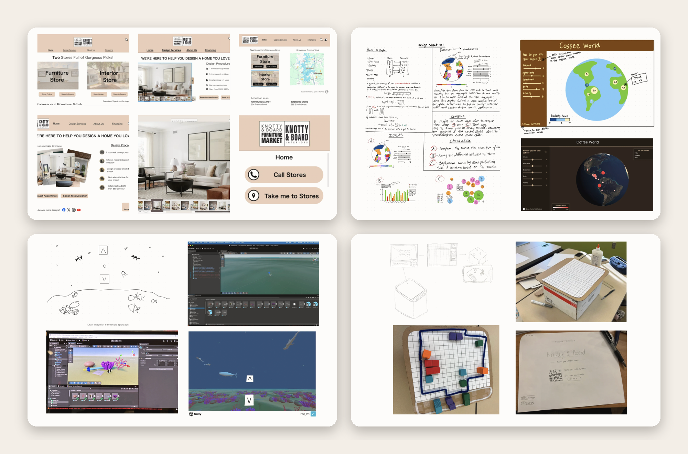
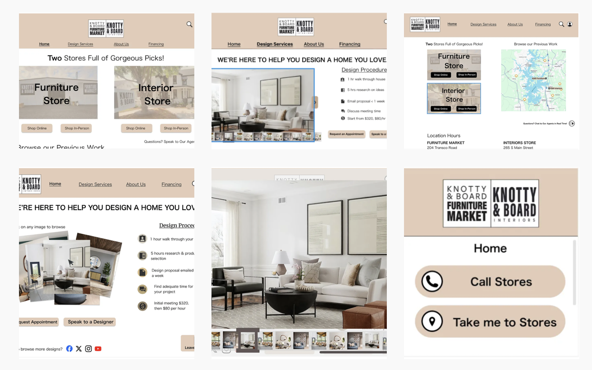
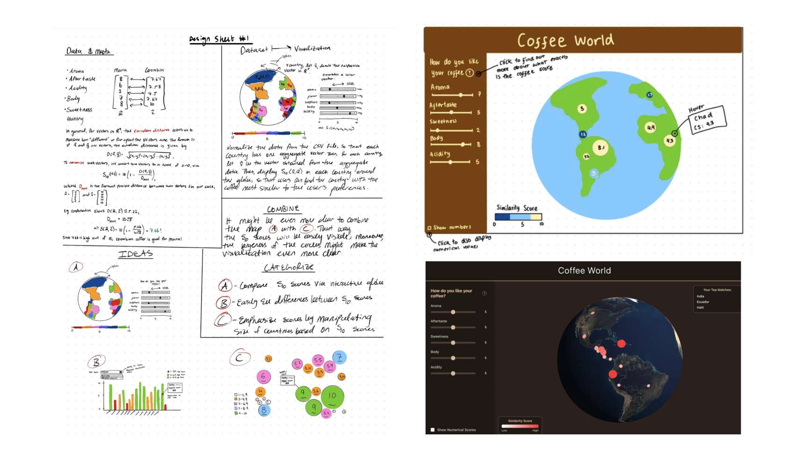
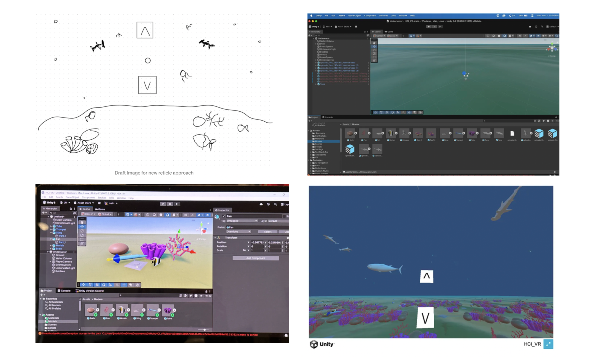
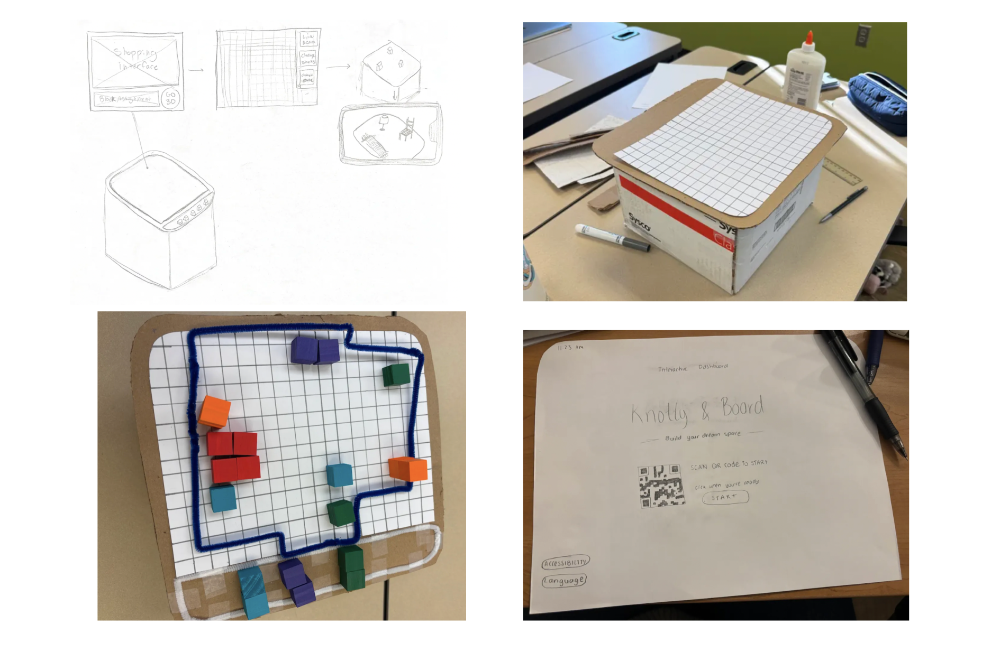

Coursework · Human-Computer Interaction · Four Design Sprints
Four short design sprints from a semester of Human-Computer Interaction coursework, each one a fast needfinding-to-prototype cycle applied to a different medium: a multi-device website redesign, a data visualization, a VR experience, and a physical-digital hybrid prototype.

These four sprints came out of one semester of Human-Computer Interaction coursework, and I'm grouping them together because the thread connecting them matters more than any single one on its own. Each sprint started with a real constraint, an existing local business, a public dataset, an unfamiliar medium, a classmate's idea, and moved through the same basic loop: understand the user, sketch fast, test on paper or in a rough prototype, and revise based on what actually confused people. What changed each time was the medium: screens across device sizes, data visualization, an immersive VR world, and a physical object paired with a phone. Working through that same process across that many mediums in one semester taught me more about where design thinking actually holds up than any single deep project could have.
Challenge: Redesign the website for Knotty & Board, a real furniture and interior design store in Davidson, NC, so it works across a laptop, a smartwatch, and a large interactive display, not just a single screen size.
Approach: We built two personas grounded in the store's likely customers, a busy new homeowner and an Airbnb host furnishing a rental, then sketched 30 concepts across the three device sizes before narrowing down. Paper prototypes went through two rounds of testing, first with classmates, then a full class demo, and each round surfaced specific affordance problems: an unlabeled chat button, a design gallery that didn't look clickable, a keyboard that would have been too large on the big display.
Outcome: The final prototype gave each device a role instead of shrinking the same design down to fit. The watch kept only quick actions like calling the store or checking an order. The large display added an interactive, zoomable map and a chatbot. The laptop stayed closest to a traditional shopping experience, just decluttered.

Challenge: Turn a public coffee quality dataset (CORGIS, 2010 to 2018, 32 countries) into one analytical visualization and one persuasive one, working with teammates Kyle, Kwasi, and Jordan.
Approach: We used the Five Design Sheet method to iterate from broad brainstorming to a final design. The analytical piece became a choropleth map of average coffee quality by country, paired with a bar chart comparing scores by production owner and a pie chart of production volume. For the persuasive piece, we built a similarity score: a five-dimension flavor profile (aroma, aftertaste, sweetness, body, acidity) that a user could set with sliders, compared against each country's coffee profile using Euclidean distance, then visualized on an interactive 3D globe.
Outcome: Feedback from classmates and our professor pushed the accessibility of the visualizations specifically: replacing a blue gradient with distinct, colorblind-friendly categories, and bucketing continuous scores instead of using a smooth gradient that was hard to read precisely.

Challenge: Design an immersive VR experience set in an unfamiliar world, while avoiding the two settings almost everyone defaults to: space, or a zen garden.
Approach: We grounded the concept in MIT Media Lab research on VR and relaxation, and landed on an underwater world built in Unity, navigable through head tracking and a center screen reticle. Designing for an extreme user, someone with thalassophobia, a fear of large or deep bodies of water, shaped a real decision: we kept a visible light source toward the surface at all times so users at the ocean floor never lost that reference point.
Outcome: In-class testing surfaced a UI feedback gap. Users pointing at a navigation arrow had no way to tell if it registered, so we added a color change and a growing animation to the reticle to confirm the interaction was working.

Challenge: Take a classmate's kiosk concept for Knotty & Board, a touchscreen where customers could drag furniture into a floor plan, and extend it into something new.
Approach: Needfinding interviews with four people surfaced the actual problem: users were treating floor planning and decorating as one task, which added unnecessary cognitive load. We split them apart and built a low-fidelity, cardboard physical dashboard for arranging a room's layout, paired with a phone showing a matching 3D view, so the spatial planning step could happen before anyone had to think about specific furniture.
Outcome: Testing surfaced a genuine open question rather than a clean answer: some users wanted abstract blocks for layout, others wanted literal furniture representations from the first interaction. That tension, not a bug to fix but a real product decision to make with more data, was the most useful finding of the sprint.

Doing four sprints back to back, each in a different medium, made the shared process more visible to me than any single project would have. Needfinding looked different every time, personas for a website, a public dataset instead of interviews, an extreme user consideration for VR, four short interviews for the physical dashboard, but it always came first, and it always changed the direction. The other constant was testing early with something rough. A cardboard box and paper cutouts told us as much about the floor-planning idea as the Figma prototype told us about Knotty & Board's website. That's probably the biggest thing I took from this semester: the medium changes, but showing someone a rough version of the thing, before it's precious, is what actually moves a design forward.